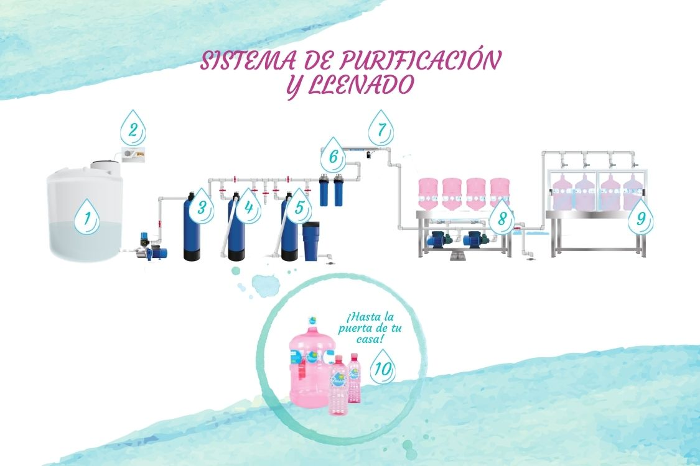
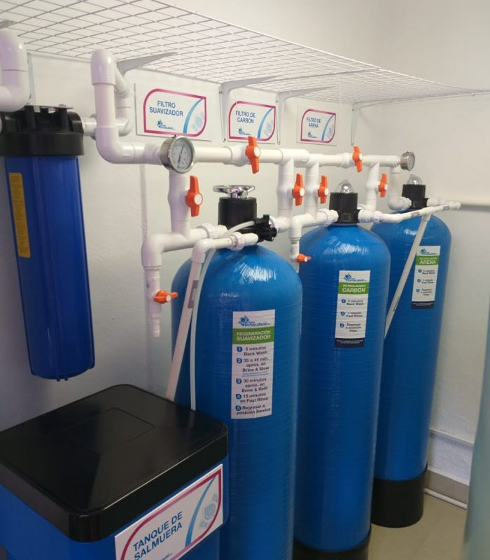

Un proceso de purificación es una serie de procesos a los que se somete el agua cuando esta ha
tenido contacto con agentes contaminantes para eliminarlos y lograr una mayor pureza en su composición, con el objetivo de
elaborar un producto de calidad apto para el consumo humano. Dichos procesos se han ido modernizando gracias
a los avances tecnológicos y a los estudios realizados para dar las condiciones óptimas al agua que consumimos.

Nuestro proceso de purificación inicia con un tanque de agua potable que se someterá a un proceso de filtrado y purificación. Este proceso de purificación se lleva de la siguiente manera:
Es uno de los gases oxidantes más potentes, es alrededor de 10 veces más poderoso que el cloro y mata todo tipo de microorganismos presentes en el agua.
Cuando el ozono hace frente a olores, bacterias o virus el átomo adicional del oxígeno los destruye por oxidación con una efectividad de hasta un 99%.
El ozono no sólo es un desinfectante eficaz, también es particularmente seguro. Sus principales funciones en el agua son:
a) Inactiva virus y microorganismos que no son sensibles a la desinfección con cloro.
b) El ozono no produce en el agua aumento en el contenido de sales inorgánicas, ni subproductos nocivos.
c) Ayuda a la oxidación de algunos metales como son el hierro y manganeso, con lo cual hace más sencillo el proceso de precipitación.

Este filtro reduce los niveles de dureza (calcio y magnesio) del agua a niveles óptimos para el consumo humano. La dureza es comunmente conocida como sarro, que se refiere a la concentración de sales de calcio y magnesio presentes en el agua.
El suavizador hace su función a través de resinas de intercambio iónico. Para esto, las resinas requieren una regeneración con sal industrial para recuperar su capacidad de intercambio.

Para terminar el proceso de purificación el agua debe pasar por una lámpara de Luz UV, a diferencia de los métodos químicos de desinfección de agua, la radiación ultravioleta (UV) proporciona una inactivación rápida y eficiente de los microorganismos mediante un proceso físico. Al aplicar rayos UV al agua por medio de lámparas de silicio y cuarzo es posible eliminar hasta un 99.9% de agentes patógenos.
Se ha demostrado que la Luz UV es eficaz frente a microorganismos patógenos, como los causantes del cólera, la polio, la fiebre tifoidea, la hepatitis y otras enfermedades bacterianas, víricas y parasitarias.
Una vez que el agua está lista para el consumo, en Agua Inmaculada CDMX contamos con una mesa de lavado, desinfección y enjuague de los garrafones y botellas.
Utilizamos agua purificada y jabón germicida de amplio espectro de acción contra bacterias y hongos que causan enfermedades y mal olor, por lo que se puede emplear con gran éxito en el lavado interno de nuestros garrafones y botellas.
Posteriormente utilizamos agua purificada para el enjuague. Con la finalidad de que el producto que nuestros clientes reciben se encuentre en un recipiente completamente limpio y libre de microorganismos y suciedad.
Una vez que nuestros garrafones y botellas están completamente limpios los pasamos a nuestra mesa de llenado. Esta mesa es de acero inoxidable de grado alimenticio y cuenta con encapsulado de acrílico para impedir contaminación cruzada al momento del llenado.
Las tapas que utilizamos también tienen el mismo proceso de limpieza y desinfección para asegurar la máxima calidad de nuestros productos.
Finalmente nuestros garrafones y botellas son sellados y etiquetados , además colocamos un holograma de garantía y autentificación de nuestra marca Agua Inmaculada.
¡¡Así nuestro producto está listo para ser entregado en planta o hasta la puerta de tu hogar!!